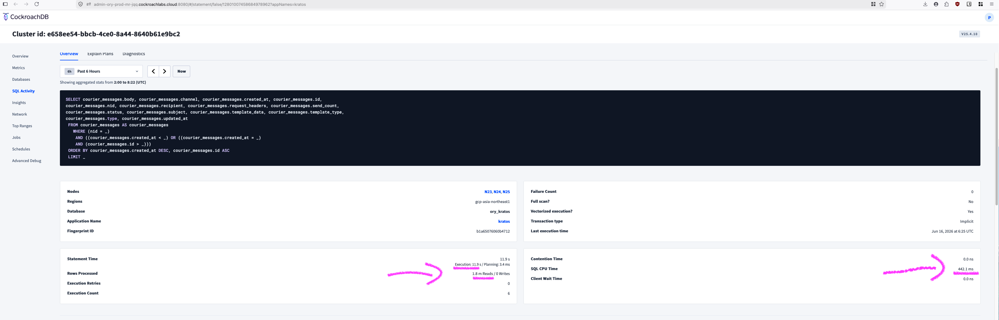
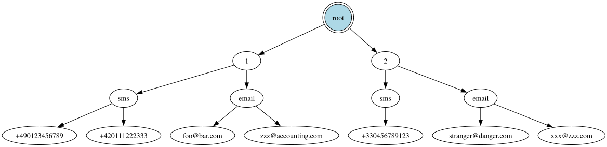
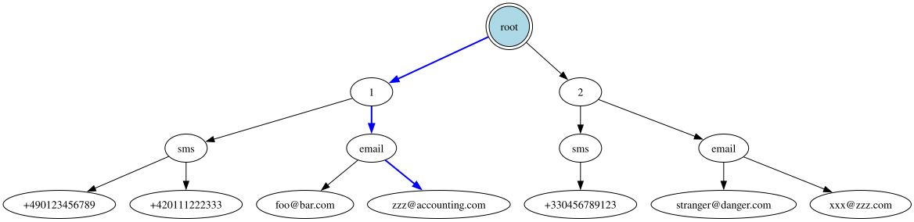
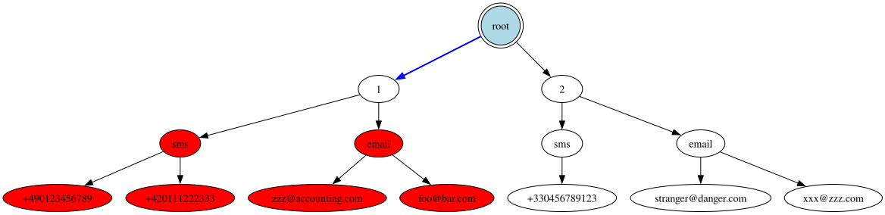
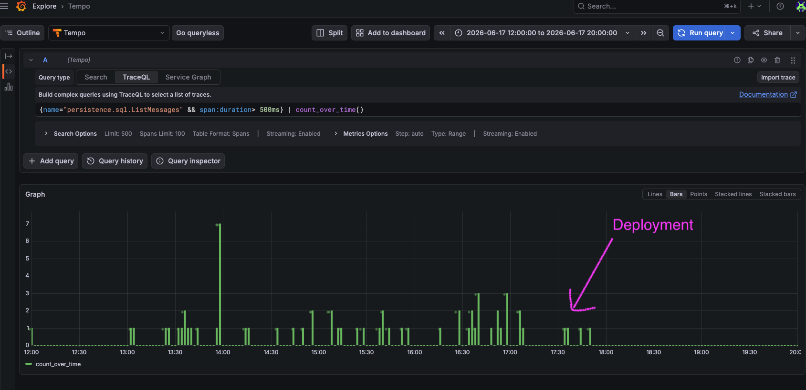

Philippe Gaultier
Philippe Gaultier
Philippe Gaultier
Philippe Gaultier
Published on 2026-07-01. Last modified on 2026-07-01.
After fixing too many rows scanned and too many retries, I came back to the list of slowest queries in the CockroachDB dashboard.
This one piqued my curiosity: 12s runtime, 1.8 million rows read, SQL CPU time of 442 ms:

Which is weird given that there is a LIMIT there. I don't remember what the actual limit is in the code, I think it is LIMIT 100. In any case: we are reading millions of rows and throwing them nearly all away, in a very slow manner.
The worst thing is: this query is doing pagination: reading one page of 100 entries in a table. It should take < 0.5s tops.
As always, the code is open-source!
The table (only showing the relevant fields) looks like this:
SqlCREATE TABLE courier_messages ( id UUID NOT NULL, created_at TIMESTAMP NOT NULL, nid UUID NULL, -- [...] INDEX courier_messages_nid_recipient_created_at_id_idx (nid ASC, recipient ASC, created_at DESC) )
nid is the tenant id, because Kratos in its enterprise edition supports multi-tenancy, and each row stores the tenant id. Since it is a constant here, we can ignore it.
And the query roughly does:
SqlSELECT * FROM courier_messages WHERE nid = ? AND (created_at < ? OR created_at = ?) AND id > ? ORDER BY created_at DESC, id ASC LIMIT 100;
This is basic pagination by (created_at, id). The query gets generated from a pagination library so it looks a bit funky and perhaps slightly suboptimal but it works correctly.
So why is it so goddamn slow?
I looked at the first step in the plan using EXPLAIN ANALYZE and I see we do use the index courier_messages_nid_recipient_created_at_id_idx (indeed, the statistics from CockroachDB mentioned Full table scan: No):
Plaintexttable: courier_messages@courier_messages_nid_recipient_created_at_id_idx spans: [/'gcp-asia-northeast1'/'000e377a-062c-45b1-961c-1b28d682df6a' - /'gcp-asia-northeast1'/'000e377a-062c-45b1-961c-1b28d682df6a'] [/'gcp-europe-west3'/'000e377a-062c-45b1-961c-1b28d682df6a' - /'gcp-europe-west3'/'000e377a-062c-45b1-961c-1b28d682df6a'] [/'gcp-us-east4'/'000e377a-062c-45b1-961c-1b28d682df6a' - /'gcp-us-east4'/'000e377a-062c-45b1-961c-1b28d682df6a'] [/'gcp-us-west2'/'000e377a-062c-45b1-961c-1b28d682df6a' - /'gcp-us-west2'/'000e377a-062c-45b1-961c-1b28d682df6a']
Let's unpack it, the index in use is nid ASC, recipient ASC, created_at DESC), and a span is /'gcp-asia-northeast1'/'000e377a-062c-45b1-961c-1b28d682df6a' - /'gcp-asia-northeast1'/'000e377a-062c-45b1-961c-1b28d682df6a', which means:
nid (i.e. tenant id) is then used in the index, so that only rows for the current tenant are scanned. That's great.Wait wait wait. That means we are reading all the rows of the tenant in memory, and then doing some post-processing to apply the remaining filters? But that makes no sense, because the query provides created_at, but this field is not used at all in the index!
Aaaah, I understand now: that is the same issue as in part 1. We use a multi-column index (A, B, C) and provide only A and C, which means the database can only really use A (i.e.: nid, the tenant id) in the index, and scans all of the remaining rows into memory. That explains why we read millions of rows.
I'll re-use the diagrams from part 1 to explain how the index looks like from the database perspective:

The optimal use is a point lookup, where all fields of the index are provided by the query:

But what we are doing is only providing the first one, effectively:

Which is very inefficient.
Even worse: due to the ORDER BY clause, we load these millions of rows into memory, then we sort them, then we filter them, and finally we apply the LIMIT. That explains the high SQL CPU time of 442 ms.
These steps are visible in the plan:
Plaintext└── • limit │ count: 100 │ └── • filter │ [...] │ filter: (created_at < '2026-06-16 09:02:42.094011') OR ((created_at = '2026-06-16 09:02:42.094011') AND (id > '5956b380-9f51-4882-be87-277e05b60d23')) │ └── • sort │ [...] │ order: -created_at,+id │ └── • scan [...] table: courier_messages@courier_messages_nid_recipient_created_at_id_idx spans: [/'gcp-asia-northeast1'/'000e377a-062c-45b1-961c-1b28d682df6a' - /'gcp-asia-northeast1'/'000e377a-062c-45b1-961c-1b28d682df6a'] [/'gcp-europe-west3'/'000e377a-062c-45b1-961c-1b28d682df6a' - /'gcp-europe-west3'/'000e377a-062c-45b1-961c-1b28d682df6a'] [/'gcp-us-east4'/'000e377a-062c-45b1-961c-1b28d682df6a' - /'gcp-us-east4'/'000e377a-062c-45b1-961c-1b28d682df6a'] [/'gcp-us-west2'/'000e377a-062c-45b1-961c-1b28d682df6a' - /'gcp-us-west2'/'000e377a-062c-45b1-961c-1b28d682df6a']
So, completely suboptimal.
What we want is this index: (nid, created_at, id) so that the 3 provided fields in the query are used in the index.
It turns out that this index used to exist! And then at some point it was removed. Either the person thought this index is unused, or that another index is better in this case. But that was the wrong move.
Ok, so we just have to re-add it I guess:
SqlCREATE INDEX courier_messages_nid_created_at_id_idx ON courier_messages (nid ASC, created_at DESC, id ASC);
CockroachDB has a cool feature where you can add an index in production as NOT VISIBLE, which means no queries use it, and then when testing, you can force your query to see the index and use it. I did that, and I confirmed the same query used the new index. Since indexes are added in a background job (and we can even lower the load with LOW PRIORITY), we have the luxury to experiment in production safely.
Since Kratos supports 4 databases (SQLite, PostgreSQL, MySQL, CockroachDB), and this fix works on all databases, every single user benefits from it!
Since the query provides nid, id, and created_at, would the index (nid, id, created_at) also work?
Counter-intuitively: no!
Why is that?
The query does: ORDER BY created_at DESC, id ASC. The order matters: first we sort by created_at, and then by id. With the index (nid, id, created_at), created_at is not the left-leading column after nid so the ORDER BY no longer matches the order of the index fields. That would force the planner to load all of the rows into memory and sort them there and we're back to square one!
Order matters.
We alternatively could drop id from the ORDER BY clause since it is debatable whether a stable total order is required in this particular case (id is used as a tiebreaker in case two elements have the same created_at), but I decided not to, because that would be a potential breaking change, and also it would require modifying the pagination library that generates this query. This pagination library is used throughout the codebase so that would be a big risky change.
Comparing the statistics in the CockroachDB dashboard before/after, that's what we see:
| Metric | Before (2026-06-16) | After (2026-06-18) |
|---|---|---|
| Statement time | 11.9 s | 740 ms |
| Rows read | 1.8 M / exec | 10.3 / exec |
| SQL CPU | 442 ms | 235 µs |
Great success.
We can also see that the degenerate cases (tenants with lots of rows which results in many seconds of latency - here filtering for > 500 ms) are all gone:

This issue was quite similar to part 1, with a similar number of rows scanned in the millions. This one resulted in an even worse CPU usage due to the sorting done in the query (ORDER BY), and while in part 1, the fix was to specify more fields in the query to better use the existing index, here we instead chose to add a previously (and erroneously) removed index.
If you enjoy what you're reading, you want to support me, and can afford it: Support me. That allows me to write more cool articles!
This blog is open-source! If you find a problem, please open a Github issue. The content of this blog as well as the code snippets are under the BSD-3 License which I also usually use for all my personal projects. It's basically free for every use but you have to mention me as the original author.
My views are my own and not those of my employer.